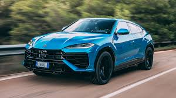

The Lamborghini Urus, introduced in 2018, marked Lamborghini’s bold entry into the luxury SUV market. As one of the world’s fastest SUVs, the Urus combines the brand’s high-performance DNA with the practicality and versatility of a sport utility vehicle. Powered by a 4.0-liter twin-turbo V8 engine producing around 641 horsepower, the Urus boasts a 0-60 mph time of just 3.5 seconds and a top speed of over 190 mph. Its design captures Lamborghini’s signature aggressive styling, with sharp lines, wide stance, and angular features reminiscent of the brand’s supercars. The Urus’s muscular profile and unmistakable Lamborghini aesthetics set it apart from traditional SUVs, making it popular among luxury car enthusiasts looking for both performance and everyday usability.
Inside, the Urus offers an opulent and tech-forward experience, catering to those who value both luxury and innovation. The cabin is spacious and finely crafted, with high-quality materials such as Alcantara, carbon fiber, and leather, while its infotainment system includes advanced features like customizable digital displays, a premium sound system, and multiple driving modes. The Urus also offers off-road capabilities through its adaptable suspension and specific drive modes for terrain like sand, snow, and mud, allowing drivers to experience the thrill of a Lamborghini beyond the racetrack. The Urus’s success has expanded Lamborghini’s customer base significantly, attracting those who desire the thrill of a high-performance vehicle with the comfort and space of an SUV. As a result, the Urus has quickly become one of Lamborghini’s best-selling models, reshaping the luxury SUV market and establishing Lamborghini as a dominant player in this segment.